Rotorua demo
Site data sources
note add what kindof lat long system used_____
Limnotrack Buoy (lat:-380550S Lon:1761653E) on lake, NIWA virtual climate station network (VCSN) grid NO:27879 lat:-38.075 lon:176.275, ERA5 statlite data for Lat:-38.114908 and Lon:176.316662, Observational data “Airport” station 1770 (lat:-38.10592 lon:176.31481), Obresvational data “Town” station 41077 (lat:-38.14635 lon:176.2578).
Data coverage
Metrics table (reference vs targets)
Time series overlays
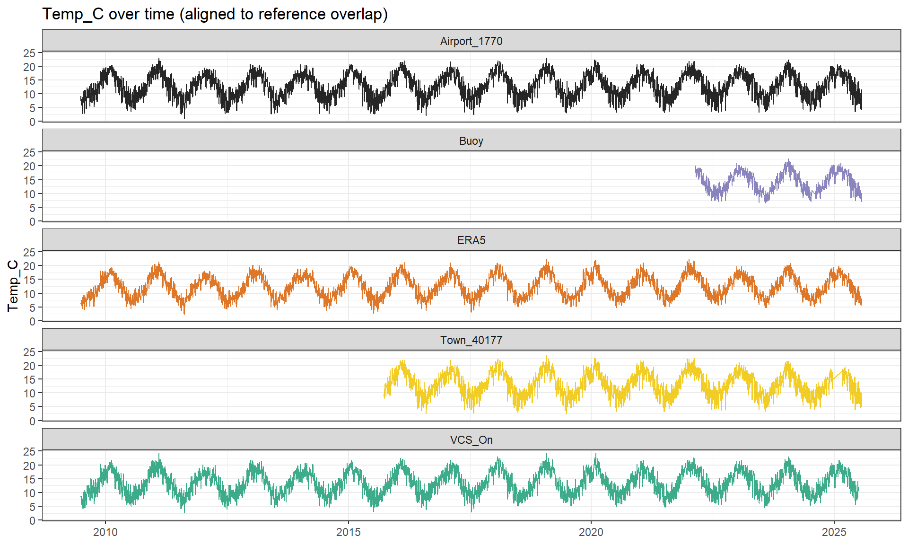


Precipitation event structure
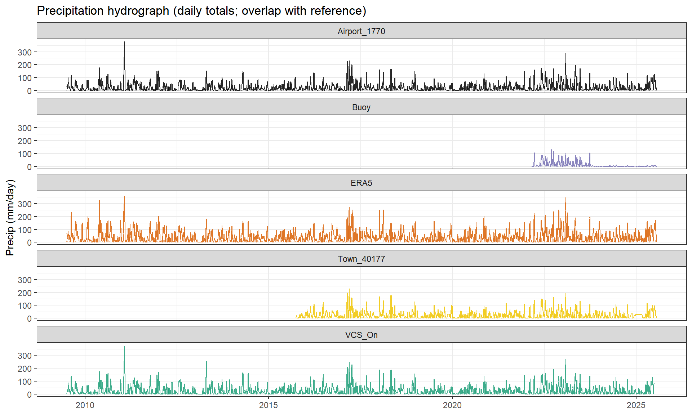
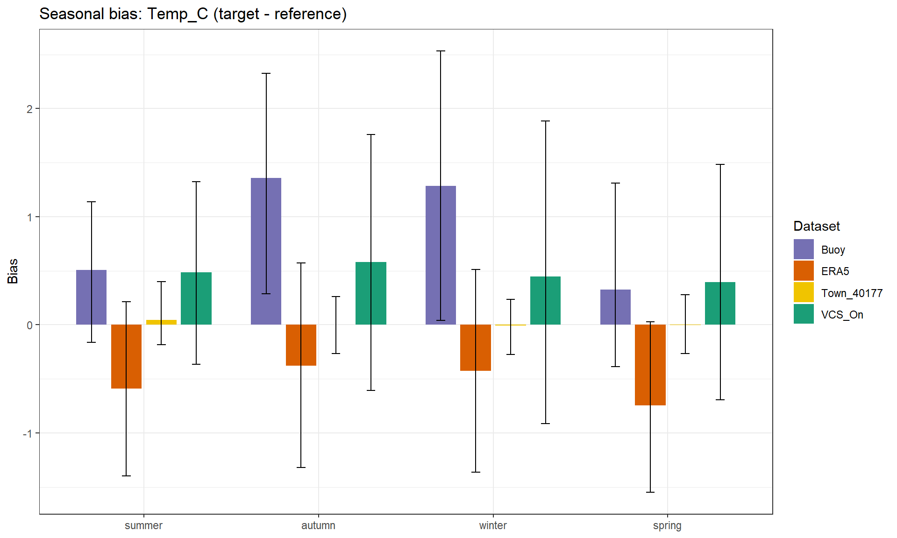
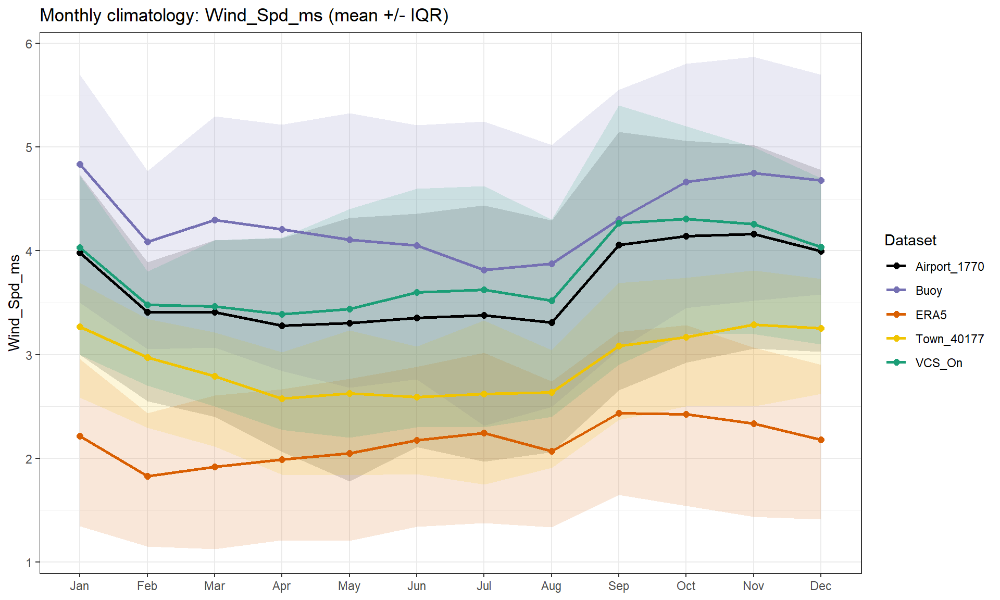
Distribution (variability / bias)

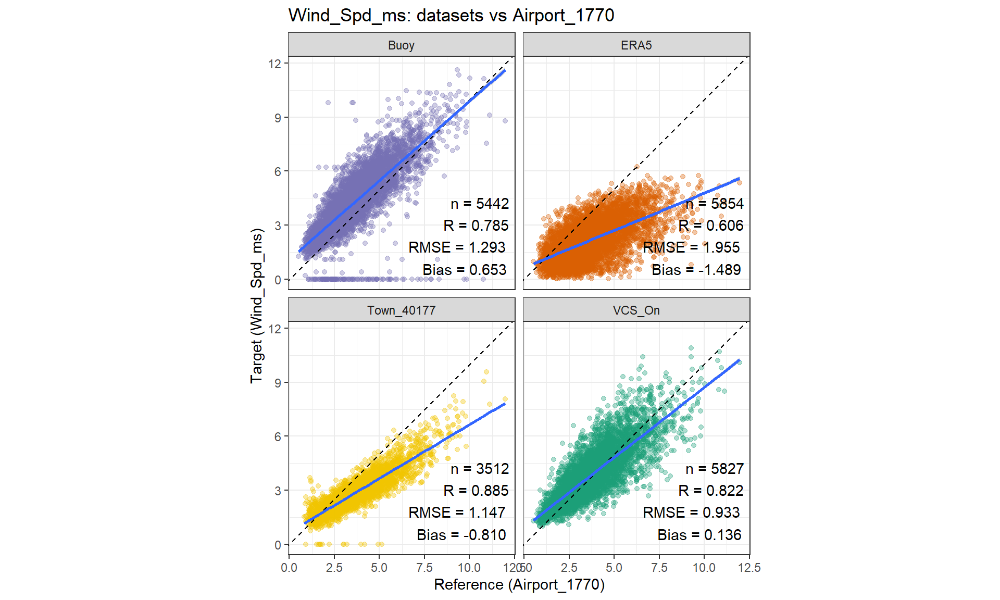
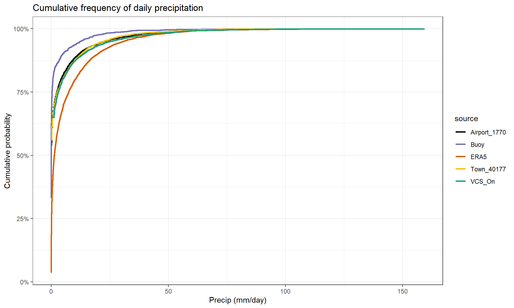
Scatter vs reference

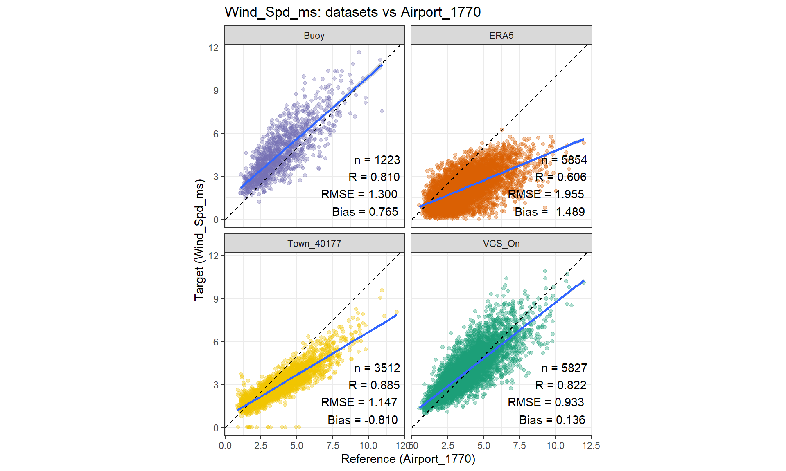
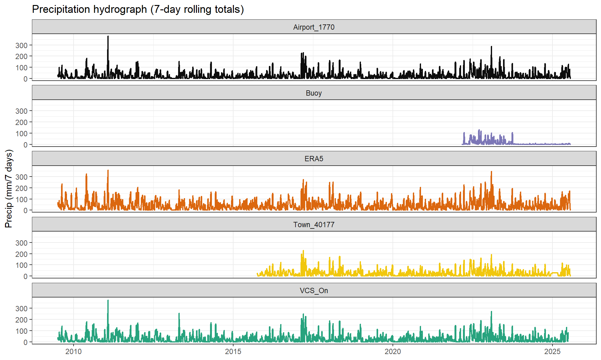
Rolling diagnostics (drift thrugh time)
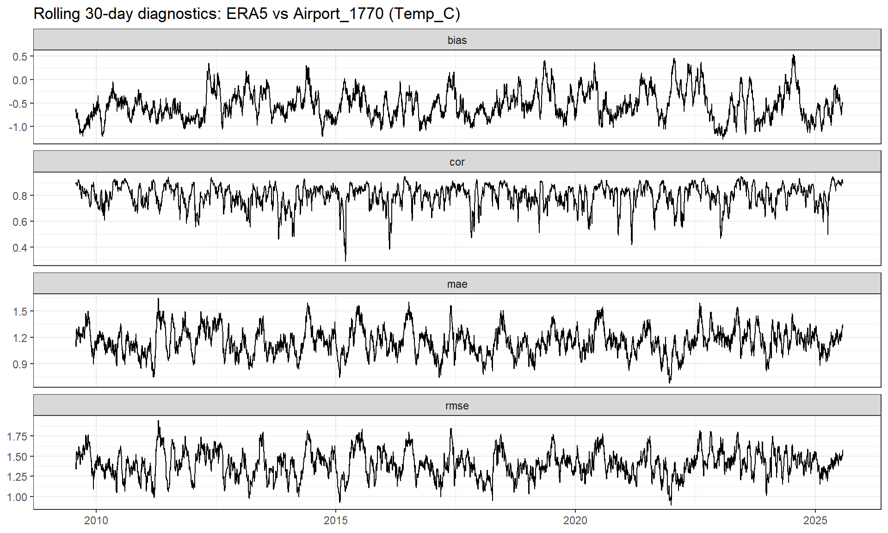


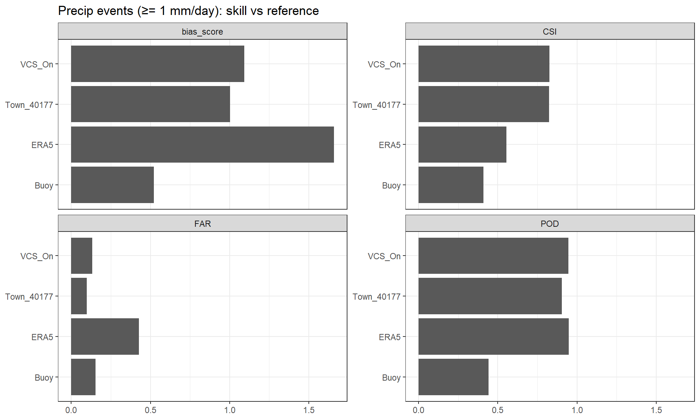


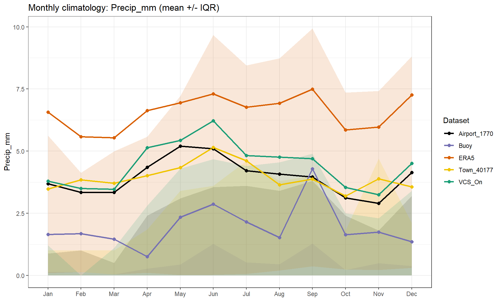


Precipitation event agreement
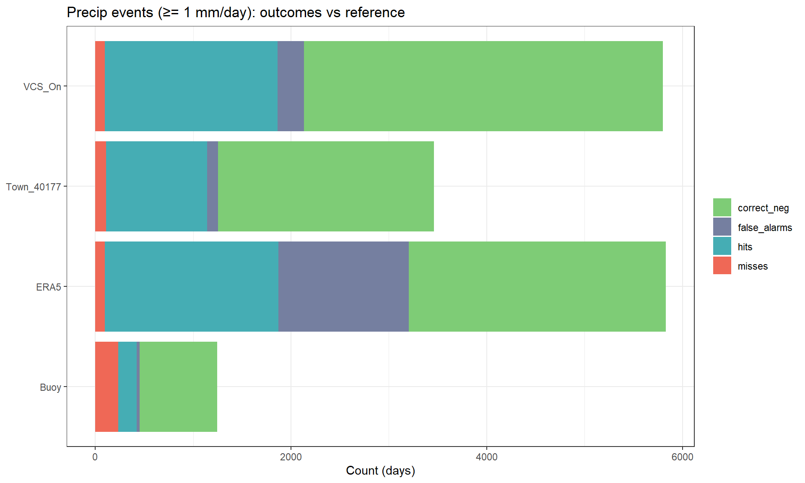
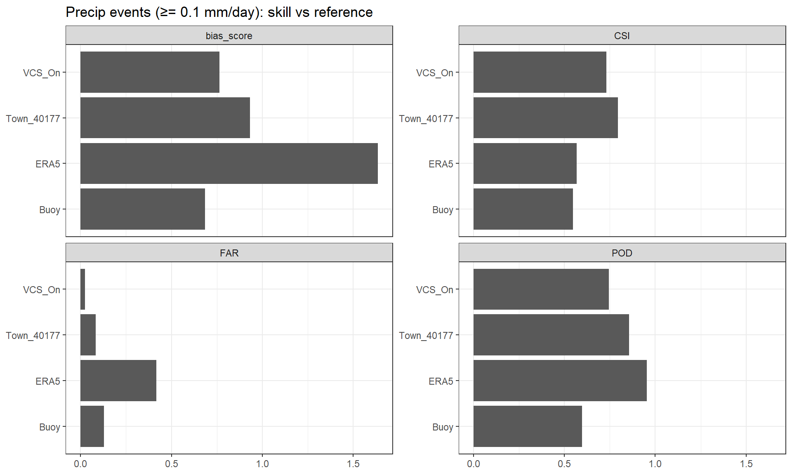
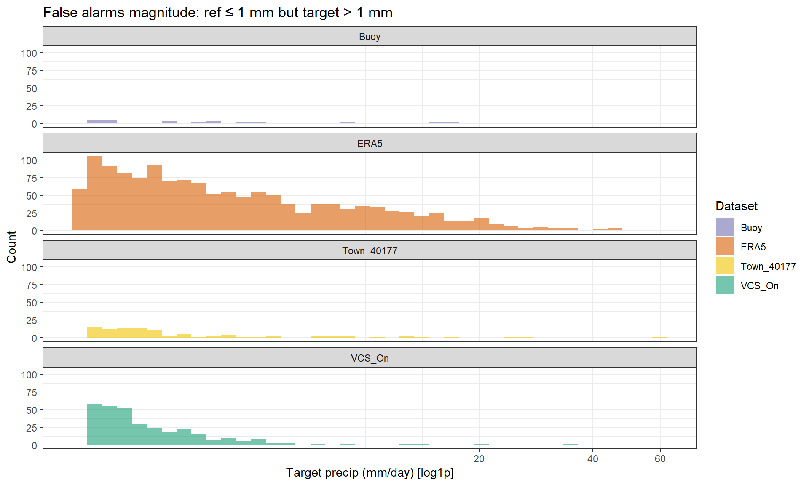
Monthly climatology (seasonal structure)


Seasonal performance (NZ/Southern Hemisphere)

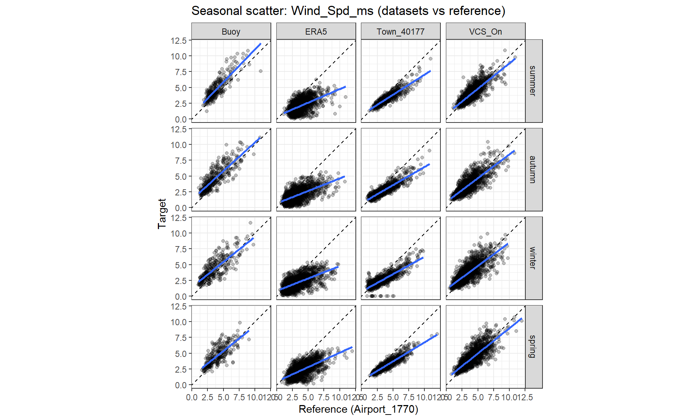